地政学
ホイアンは首都ではありませんが、南シナ海交易、チャンパ、ベトナム王朝、中国人会館、日本人町の記憶が交差します。現在はダナン都市圏の観光軸に入り、海、川、空港、港を結ぶ中部沿岸の小さな結節点でもあります。
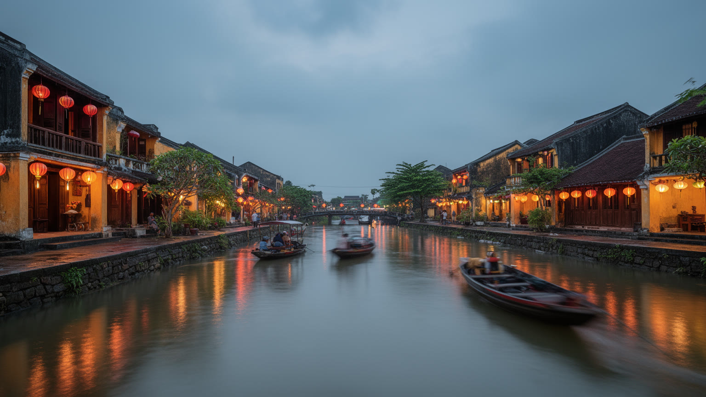
🇻🇳 ベトナム / アジア / World City Atlas
トゥボン川の河口近くで、商館、寺、会館、木造町家、灯籠、仕立て屋、海辺、チャム島が重なる港町。世界遺産の保存と観光で働く日常が、狭い街路の中で向き合います。
都市の骨格
ホイアンは港の機能が移った後も、川沿いの町割り、会館、寺、職人の店、住宅、夜市を残しながら観光都市になりました。旧市街だけでなく、海岸、田畑、ココナツ林、チャム島までが都市の生活圏です。
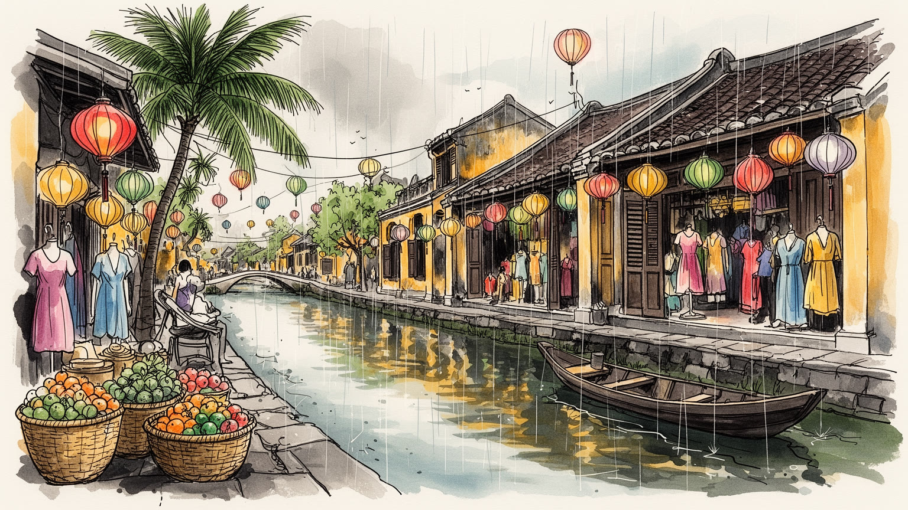
ホイアンは首都ではありませんが、南シナ海交易、チャンパ、ベトナム王朝、中国人会館、日本人町の記憶が交差します。現在はダナン都市圏の観光軸に入り、海、川、空港、港を結ぶ中部沿岸の小さな結節点でもあります。
宿泊、飲食、仕立て、土産、船、写真、清掃、保全、農漁業が観光を支えます。繁忙期は現金収入を生む一方、洪水、疫病、航空需要、家賃上昇で仕事は揺れやすいです。手仕事の技能と低賃金労働が近くで同時に動く街です。
寺、会館、祖先祭祀、仏教、道教、土地神、灯籠の行事が町の暦を作ります。交易港の記憶は建物の様式だけでなく、商家の祭壇、料理、言葉、職人の作法に残ります。観光化しても、祈りは住民の時間を整える核です。
夜の灯籠と古い町家は旅行者を引きつけるが、住民には洪水対策、家屋修理、教育、医療、交通安全、ごみ、家賃の問題があります。名所を守るには、写真を撮る街としてだけでなく、住み続けられる街として整える必要です。
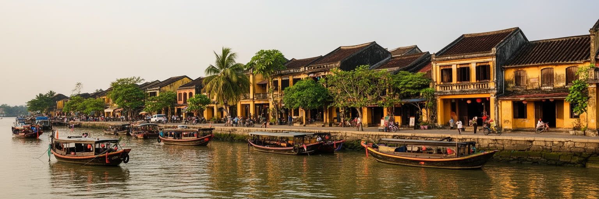
ホイアンを読む入口は、古い町並みが単なる観光用の背景ではなく、東南アジア海域交易の実務を受け止めてきた都市装置だったことです。トゥボン川は内陸の物資を海へ出し、河口の砂州と潮の変化は船の入り方を決めました。町には中国系の会館、商家、寺、倉庫、住居、井戸、祭壇がまとまり、商売、信仰、親族、出身地のネットワークが同じ通りで動きました。日本、華南、チャンパ、ベトナム王朝、ヨーロッパ商人の痕跡は、目立つ建築様式だけでなく、屋根の深さ、間口の狭い町家、奥へ伸びる生活空間、川へ向かう路地に残っています。やがて土砂の堆積や港湾機能の移動で大きな交易港としての役割は弱まりましたが、その衰退が逆に町割りを大きく壊さず残す条件にもなりました。現在のホイアンは、港としての速度を失ったことで、記憶を歩ける都市になっています。ただし保存された町並みは静止した博物館ではありません。住民の住まい、商売、祭祀、修理、行政規制、観光客の移動が重なり、古い建物は毎日使われながら保たれます。川沿いを歩くことは、過去の栄光を眺めるだけでなく、交易都市が観光都市へ変わる過程で、何が残り、何が別の収入へ置き換わったのかを見ることです。船荷を待つ港の時間は消えても、値段を決め、祈り、客を迎える商いの感覚は今も通りの作法に息づいています。
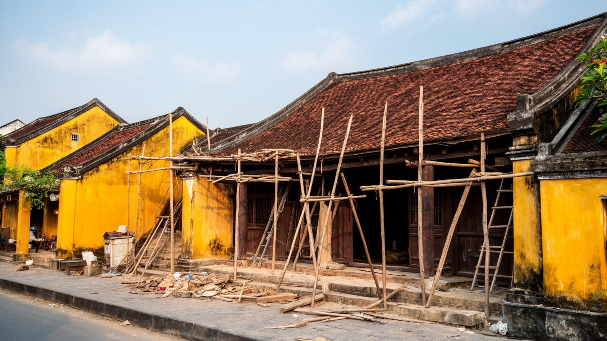
世界遺産としてのホイアン旧市街は、木造町家、瓦屋根、黄色い壁、会館、寺、来遠橋、細い街路によって強い印象を作ります。しかし保存の核心は、古い外観を撮影しやすく保つことだけではありません。建物の多くは湿気、白蟻、洪水、老朽化にさらされ、屋根、柱、床、排水を絶えず直す必要があります。修理には費用と技能が要り、住民が商売を続けるには観光収入が役立つ一方、観光向けの店ばかりになると日用品の店や住宅機能は弱くなります。旧市街の規制は景観を守りますが、住む人にとっては改築、空調、防災、バリアフリー、商売の自由を制約することもあります。保存都市では、所有者、行政、職人、観光事業者、国際機関、旅行者の利害が同じ建物に集まります。ホイアンの古さは自然に残ったものではなく、修理、合意、規制、資金、忍耐によって保たれている古さです。夜に灯籠がともる通りは美しい一方、その背後では朝の清掃、商品搬入、住民の通学、祭壇への供物、雨への備えが重なります。旧市街を読むには、保存された景観の表面だけでなく、生活のためにどの部分が変えられ、どの部分が変えられないのかを見る必要があります。そこに、世界遺産都市の魅力と緊張が最もはっきり表れます。観光の利益が修理費や住民サービスへ戻らなければ、保存は外から眺める人のための負担になってしまいます。
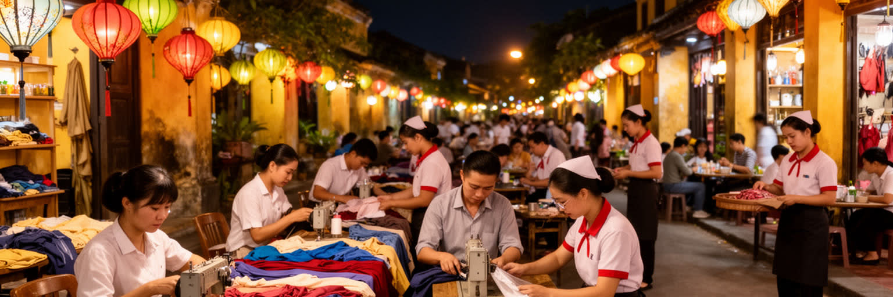
ホイアンの経済は、旧市街を歩く観光客の消費に深く結びついています。宿泊、飲食、カフェ、仕立て屋、革製品、土産物、ランタン作り、料理教室、写真撮影、ボート、ツアー、清掃、警備、修復、配車、マッサージ、洗濯、食品配送が、短い滞在の快適さを支えます。観光が増えると、若者は語学や接客を学び、家族経営の店は現金収入を得ますが、仕事は季節、天候、航空需要、国際情勢に左右されやすくなります。夜市や川辺の賑わいは街の収入を生む一方、長時間労働、低賃金、家賃上昇、騒音、廃棄物、交通混雑も生みます。観光客が安く早く服を仕立てられる背景には、採寸、縫製、仕入れ、直し、納期管理を担う人の時間があります。料理や工芸の体験も、伝統文化を見せる舞台である前に、暮らしを支える仕事です。ホイアンを観光都市として評価するなら、来訪者数やホテルの稼働率だけでなく、収入が地域に残るか、女性や若者が安全に働けるか、技能が使い捨てにならないかを見る必要があります。灯籠の光は都市の象徴ですが、その明るさは夜遅くまで働く人、早朝に掃除する人、雨の後に店を直す人によって保たれています。観光の成功は、働く人が街に住み続けられる条件を作れるかで決まります。家族経営の小店が残り、職人が値切られすぎず、閑散期にも別の収入へ移れる仕組みがあって初めて、観光は地域の力になります。
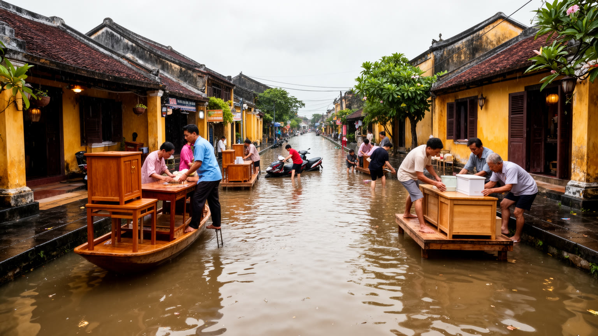
ホイアンの美しさは水辺と切り離せませんが、その水は同時に都市の不安でもあります。トゥボン川と周辺の水路は、交易、漁、農地、舟運、観光の背景を作ってきました。旧市街の川沿いに家が並ぶ景観は魅力的ですが、雨季には増水と浸水が起こり、住民は家具や商品を上へ移し、床を洗い、営業を止め、橋や道路の状態を見ながら移動します。洪水は珍しい災害ではなく、都市の季節として繰り返されます。そのため町家の構造、床の高さ、倉庫の使い方、商売の在庫、家族の避難、学校や市場の休み方まで、水位の記憶に合わせて調整されてきました。気候変動で豪雨や海面上昇の影響が強まれば、古い建物の保存と住民の安全はさらに難しくなります。観光客には水に映る灯籠が印象的でも、住民には濁流、湿気、カビ、修理費、保険、収入停止が現実です。水辺を整備しすぎると景観は均質になり、放置すれば生活の安全が損なわれます。ホイアンを理解するには、川をロマンチックな背景としてだけでなく、都市の収入、食、移動、危険、修理を決める基盤として読む必要があります。水位情報を近所や店同士で共有する習慣も、生活を守る知恵です。水と共に暮らす知恵を残しながら、より激しい気候に備えることが、この小さな世界遺産都市の大きな焦点です。排水、避難情報、修理支援、観光営業の一時停止を地域全体で扱えるかが、次の洪水への回復力を左右します。
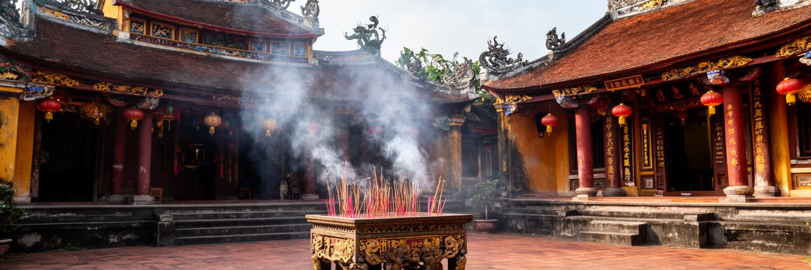
ホイアンの文化は、交易で集まった人びとが信仰と互助を通じて町に根を張った歴史から生まれています。中国系の会館は、出身地の人びとが商売、祭祀、相談、教育、相互扶助を行う場であり、寺や神像は船旅、商売、家族の安全を祈る場所でした。商家の奥には祖先の祭壇が置かれ、店の表では取引が行われ、同じ建物の中で経済と祈りが結びつきました。仏教、道教、祖先崇拝、土地神への配慮、ベトナムの年中行事は、現在も住民の時間を区切ります。観光客は会館の装飾や香の煙を美しいものとして見ますが、住民にとっては家族の記憶、商売の倫理、地域の関係を保つ実践です。灯籠祭りも、単なる夜景の演出ではなく、祖先、川、商売、季節の祈りを現代の観光と結び直す行事として読むことができます。宗教施設は旧市街の景観要素である前に、生活の不安を受け止める場所です。家屋の修理、商売の変化、観光化、若い世代の移動が進むほど、会館や寺は地域の記憶を束ねる役割を持ちます。ホイアンの信仰を読むことは、異文化交流を華やかに語るだけでなく、移住者が知らない土地で互助を作り、商売の利益を共同体の秩序へ戻してきた仕組みを見ることです。祈りは、港町が人の出入りに耐えるための社会的な基礎でもあります。香の煙や供物の習慣は、観光客の視線を越えて家族の時間をつなぎ続けます。
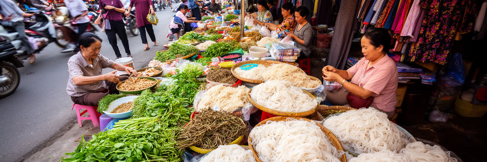
ホイアンの食と市場は、世界遺産の町並みを生活都市へ戻してくれる入口です。中央市場には魚、野菜、香草、米、果物、布、日用品が集まり、朝の買い物、店の仕込み、観光客の食べ歩きが近い距離で混ざります。名物として知られるカオラウ、ホワイトローズ、ミークアン、コムガーは、観光メニューであると同時に、井戸水、米粉、香草、豚肉、鶏、淡水と海の食材、家族の調理技術が結びついた地域の味です。市場では女性の労働がよく見えます。仕入れ、値付け、調理、片付け、家計管理、観光客への対応が、家庭と商売の境界をまたいで行われます。飲食店が増えるほど、食材の需要は広がりますが、価格上昇や廃棄物、衛生管理、労働時間の問題も増えます。料理教室や食べ歩きツアーは、食文化を伝える良い機会になる一方、生活の味を観光向けの演目に変えすぎる危うさもあります。ホイアンの市場を歩くと、旧市街の保存が建物だけの問題ではないことが分かります。住民が買い物をし、職人が材料を仕入れ、店が朝から火を使い、観光客が同じ通りで食べるからこそ、町は生きた都市であり続けます。食は、港町の交易、農村、川、海、家族の労働を一皿に集める、最も身近な都市史でもあります。朝の仕入れの値段や魚の量は、天候、漁、物流、観光需要を映し、町の体調を知らせる指標にもなります。
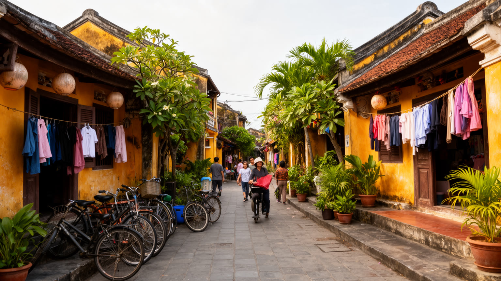
ホイアンの日常は、旧市街の写真だけでは見えません。古い町家に住む家族、郊外の住宅地、川を渡る集落、ココナツ林の近くの村、海辺の宿泊施設、チャム島の暮らしが、一つの都市圏としてつながっています。中心部では観光店が増え、家賃と地価が上がり、住民向けの店が減ることがあります。若い世代は観光業で働く一方、安定した収入や住宅を求めてダナンなどへ移ることもあります。高齢者には医療、暑さ、洪水時の避難、家屋修理が負担になり、子育て世帯には教育費、交通安全、観光客の多い道での移動が課題になります。放課後のサッカーやバドミントン、自転車での通学も、観光動線と隣り合う日常です。旧市街の歩行者化は観光には便利ですが、住民の搬入、通院、通学、緊急時の動線をどう確保するかも重要です。観光で収入を得る家と、観光から距離のある低所得世帯では、都市の見え方が違います。きれいに整えられた通りの裏には、洗濯、修理、介護、学校、寺の行事、近所づきあいが重なります。ホイアンを生活都市として読むなら、保存された建物の価値だけでなく、人がそこに住み、眠り、店を開き、洪水後に掃除し、子どもを育てられる条件を見る必要があります。世界遺産の町が本当に強いのは、訪れる人に美しく見える時だけでなく、住む人が古い家を負担だけでなく誇りとして維持できる時です。日用品を買える店、静かな路地、病院へ行く道が残ることも、町の保存の一部です。
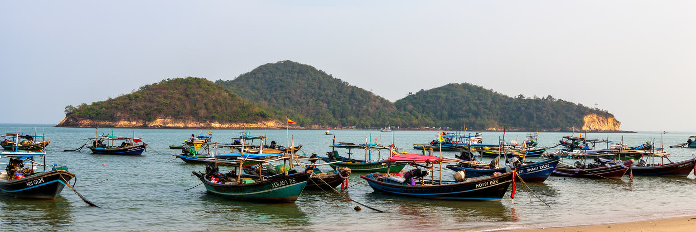
ホイアンは旧市街だけで完結する都市ではありません。クアダイやアンバンの海辺、ココナツ林の水路、チャム島の集落と海洋保護区まで含めると、都市の姿は大きく広がります。海岸はリゾート、漁業、侵食、台風、道路整備がぶつかる場所です。砂浜は観光資源ですが、波や流れで削られ、護岸やリゾート開発は海辺の景観と漁民の利用を変えます。チャム島は生物圏保存地域として知られ、サンゴ、漁、観光船、ダイビング、宿泊、廃棄物管理が密接に関わります。観光客が日帰りで海を楽しむ背後には、島民の水、電気、医療、教育、交通、漁業規制の問題があります。旧市街の灯籠だけを見ていると、ホイアンが川と海に開いた都市であることを忘れがちです。実際には、海辺の食材、島への船、台風への備え、海岸侵食対策、リゾートの雇用が、中心部の観光と結びついています。海辺の開発は収入を生みますが、地域の人が海へ近づけなくなったり、自然環境が損なわれたりすれば、都市の魅力は長く続きません。ホイアンの外側を歩くことは、世界遺産都市が水辺の生態系と地域生活に支えられていることを確認することです。川、浜、島を一体で見ると、保存すべきものは町家だけではないと分かります。海の変化は旧市街から遠い問題ではなく、食、雇用、移動、観光の質を通じて中心部へ戻ってきます。
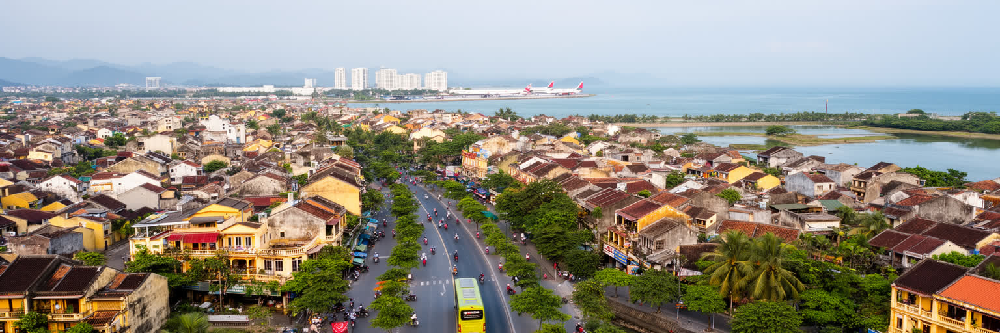
ホイアンの現在を考えるには、近隣のダナンとの関係を考える必要があります。国際空港、高速道路、港湾、大学、病院、大型商業施設はダナン側に集まり、ホイアンは世界遺産と海辺の滞在地として、その都市圏の南側に位置します。旅行者の多くはダナン空港から入り、ビーチ、ホイアン旧市街、ミーソン聖域、フエを組み合わせて動きます。行政再編によって旧クアンナム省とダナン市の関係も変わり、ホイアンはより広い都市政策の中で扱われるようになりました。これは交通、廃棄物、観光宣伝、投資、災害対応を広域で考えやすくする一方、ホイアン固有の小さな町並みや住民の声が、大きな都市開発の論理に埋もれる危険もあります。広域観光では、短時間で多くの名所を回る動線が作られますが、地元の店、職人、住民に十分な利益が残るとは限りません。バスや配車の増加は便利さを高める一方、旧市街周辺の交通安全と混雑を悪化させます。ホイアンは小都市でありながら、空港都市ダナン、内陸の遺産、海岸リゾート、農村、島をつなぐ結節点です。広域化の利点を生かしつつ、町の尺度を守れるかが、これからの都市運営の核心になります。大きな都市圏の中で小さな歴史都市が自分の速度を保てるかが問われています。広域の成長を受け入れるほど、旧市街の歩く速度と住民の発言権を制度として守る必要があります。
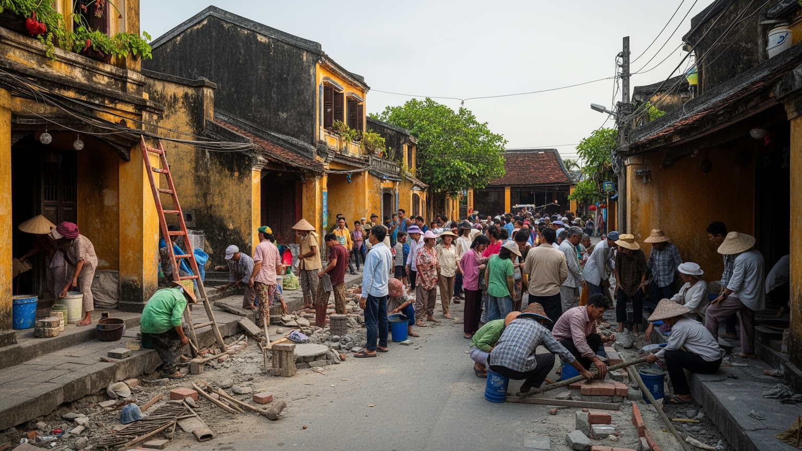
ホイアンの社会課題は、観光が成功しているからこそ見えにくくなるものがあります。町並みが美しく、店が並び、夜が明るいほど、低賃金労働、家賃上昇、若者の不安定雇用、高齢者の孤立、洪水後の修理費、廃棄物、交通事故、観光依存の脆さは背景へ退きます。世界遺産都市では、保存の名のもとに住民の改築や商売が制限されることがありますが、観光開発を放置すれば景観も暮らしも損なわれます。重要なのは、保存を外から見た美しさだけで決めないことです。古い家の所有者が修理できる支援、職人が技術を継承できる仕事、住民向けの市場や学校が残る計画、洪水や猛暑への備え、障害者や高齢者が歩ける道、観光収入の地域還元が必要です。観光客が写真を撮る自由と、住民が静かに暮らす権利は時にぶつかります。夜市やボートが賑わうほど、音、光、ごみ、川の安全も管理しなければなりません。ホイアンの保存倫理は、古い建物を凍結することではなく、変化を受け止めながら、暮らしの尊厳を壊さないことにあります。誰のために町を美しく保つのか、利益と負担を誰が受けるのかを問い続けることで、世界遺産は消費される景色ではなく、住民と訪問者が共有する責任になります。観光の収益、修理補助、教育、洪水対策を結びつけて初めて、保存は地域の未来に変わります。そこに責任が生まれます。
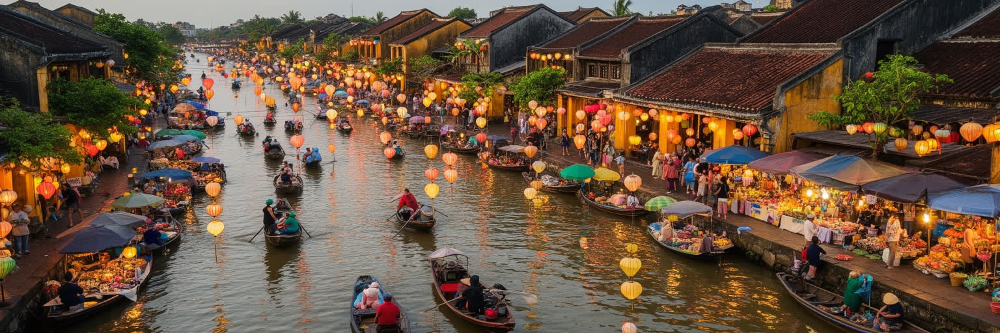
ホイアンは人口規模では大都市ではありません。それでも世界の都市地図で重要なのは、交易港の記憶、世界遺産保存、観光労働、信仰、職人文化、水害、海辺の環境が、歩いて回れる小さな範囲に凝縮されているからです。来遠橋や会館、黄色い町家、灯籠の夜景は強い象徴ですが、それだけでホイアンを理解することはできません。川の水位、古い家の修理、仕立て屋の納期、朝の市場、祖先祭祀、海岸侵食、チャム島の生活、ダナン空港からの動線まで重ねて見ると、町は静かな遺産ではなく、変化し続ける生活都市として見えてきます。観光はホイアンを支える大きな力であり、同時に家賃、労働、景観、廃棄物、文化の商品化という負担も作ります。保存は観光のためだけでなく、住民が自分の町の記憶を使い続けるために必要です。ホイアンを読むことは、世界遺産都市がどのように外からの視線を受け入れ、地域の生活へ利益を戻し、水害や開発の圧力に耐えるのかを考えることです。この町の価値は、古い建物の美しさだけでなく、港町として人を受け入れてきた柔らかさ、暮らしを続ける人の手入れ、川と海に向き合う知恵にあります。小さな都市だからこそ、保存、経済、信仰、日常の関係が見えやすく、世界中の観光都市が直面する課題を濃く映しています。歩く速度で全体を見渡せることが、ホイアンを都市の教科書のようにしています。